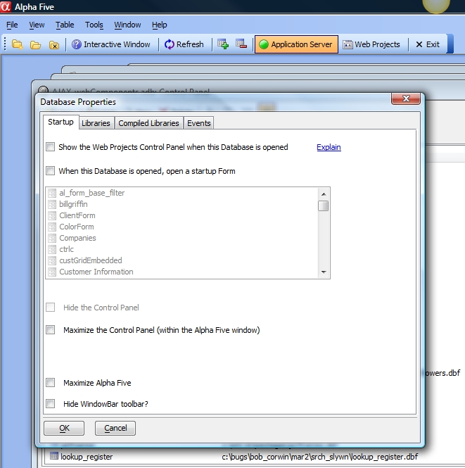

How to Show the Web Projects Control Panel Automatically for a Database
The File|Database Properties menu item brings up a dialog which contains a checkbox at the top to control whether or not the Web Projects Control Panel will be automatically displayed when the database is opened.